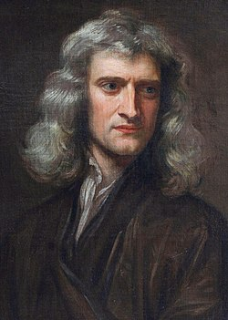

Widely considered one of the most brilliant and influential scientists of the 20th century. His groundbreaking work on the theory of relativity revolutionized our understanding of space, time, and gravity, and he made significant contributions to the development of quantum mechanics and statistical mechanics.


He was a visionary inventor who made significant contributions to the fields of electrical engineering and physics. He developed the alternating current (AC) electrical supply system that is still used today, as well as numerous other inventions, including the Tesla coil and wireless communication technology.

A brilliant theoretical physicist and cosmologist who made significant contributions to our understanding of black holes and the origins of the universe. Despite being diagnosed with a debilitating motor neuron disease, Hawking became a beloved science communicator and author of several best-selling books.

She was a pioneering scientist who conducted pioneering research on radioactivity and discovered two new elements, radium and polonium. Curie was the first woman to win a Nobel Prize, and the first person to win two Nobel Prizes in different fields (Physics and Chemistry).

Widely regarded as one of the most influential scientists in history. Newton developed the laws of motion and universal gravitation, which describe the behavior of objects in motion and the force of gravity between them. He also made important contributions to the field of optics, including the discovery of the composition of white light.

A key figure in the scientific revolution of the 17th century and is best known for his discovery of the laws of planetary motion, which describe the motion of planets around the sun. He also made important contributions to the field of optics.